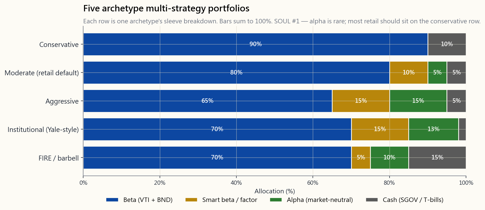
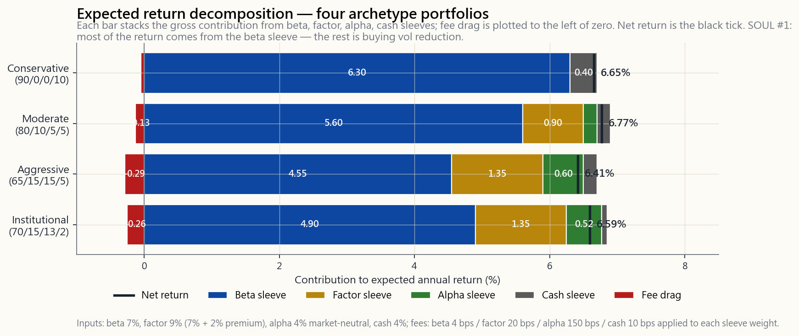

Week 24: Multi-Strategy — Combining Beta, Factor, and Alpha Sleeves into One Book
1. Why This Is Important
This is the L2 capstone. For twenty-three weeks the course has been handing you parts. Beta in week 4. Factor tilts in week 23. Long/short alpha in week 13. Sector rotation in week 16. Tactical overlays in week 10 and week 18. This week is where you put them back together into one book that you actually run.
You need this synthesis lesson for four reasons.
wrong.** They stack five 100%-equity ideas — total market plus value tilt plus dividend tilt plus mega-cap growth plus "concentrated picks" — and call the result "diversified." It isn't. It is one big beta book with five different fee structures. True multi-strategy means combining return drivers that are fundamentally different — broad market beta, smart-beta factor premia, and market-neutral alpha — not five flavours of the same beta exposure.
imitating — partially.** Endowment-style allocators run roughly 70-80% beta + 10-15% smart beta + 10-15% absolute return. The structure is sound; the implementation is what most retail investors cannot replicate without paying themselves into the ground in fees. The L2 question is which pieces translate down to a six-figure retail book and which pieces should stay on the institutional cutting-room floor.
it.** This lesson is honest about that. The default recommendation will be that 80% or more of you should run pure beta — week 4's 60/40 or week 12's lifecycle archetypes — full stop. The multi-strategy template is for the 10-20% who have the temperament, the time, and the size to run an alpha sleeve and the discipline to stop running it when it doesn't work.
In week 16 the four tranches were sector-cycle exposures. Here they are strategy exposures: beta (the physical / index core), smart beta (the seniors — established factor premia), alpha (the juniors — earned by skill), and tactical / discretionary (the exploration tier — the sleeve where things get interesting and risky). Same shape, different domain.
This week pulls together everything. There is one new chart — the sleeve-breakdown stacked bar — and one new tool — the strategy blender that lets you size each sleeve and see the resulting expected return, vol, and Sharpe in real time. The lesson is short on new theory and long on synthesis.
2. What You Need to Know
2.1 The Three (Plus One) Sleeves
A multi-strategy book has up to four sleeves. Knowing which is which keeps you honest about what each piece is being paid to do.
| Sleeve | Return driver | Typical vehicle | Expected return | Expected vol | Fee budget |
|---|---|---|---|---|---|
| Beta | The market itself | VTI + BND, or 60/40 | ~7% nominal | ~10-12% | 0.03-0.05% |
| Smart beta / factor | Persistent factor premia (value, momentum, quality) | VLUE, MTUM, QUAL, AVUV | ~8-9% (~1-2% over beta) | ~13-15% | 0.15-0.30% |
| Alpha | Manager / process skill — market-neutral | L/S equity, merger arb, market-neutral funds | ~3-5% absolute | ~3-5% | 1-2% (often plus performance fee) |
| Tactical | Discretionary regime / sector / cycle bets | Sector ETFs (XLE, XLF, …), CTA-style trend | wide range, often 0% net | 8-15% | 0.10-1.0% |
Two structural things to internalise.
Beta is the cheapest return on the table. Forty years of index investing have paid most of the bill. Every dollar you move out of beta into a more expensive sleeve has to earn its fee — net of every cost — before it has earned a right to be in your book.
Alpha is uncorrelated, not high-return. The reason institutional shops pay 2-and-20 for absolute-return strategies is not because those strategies have a higher expected return than equities. They do not. The math works because the alpha sleeve has near-zero correlation to the rest of the book — a 3% return at 4% vol with zero correlation to a 7% / 16% beta book lifts the portfolio Sharpe materially even though the alpha sleeve in isolation has a worse return than equity index.
2.2 The Institutional Template — Why 70/10/10/10 Works
Yale, Harvard, the Norwegian sovereign wealth fund, the Canada Pension Plan, every large endowment-style allocator converges on roughly the same shape:
| Sleeve | Target weight | Why this size |
|---|---|---|
| Beta (broad equity + duration) | 70-80% | Cheapest expected return, the baseline you are trying to beat |
| Smart beta / factor tilts | 10-15% | Documented premia, low fees, scalable, low alpha-decay risk |
| Absolute-return (alpha) | 10-15% | Diversifier, lifts Sharpe via low correlation, not via high return |
| Tactical / opportunistic | 0-5% | Discretionary overlays the CIO actually has conviction on |
The interactive at the bottom of this lesson lets you set these weights and see the resulting expected return and Sharpe.
The reason the institutional template is this shape and not, say, 50/25/25 is governance. Even a very smart investment team only has so many high-conviction views per year. Pushing the alpha sleeve above 15% means either taking discretionary bets the team does not have, or paying performance fees on capital they can't deploy profitably. The 70-80% beta core is the honest admission that even sophisticated allocators cannot beat the market with most of their capital. The 10-15% alpha sleeve is the part where they think they can.
2.3 Translating to Retail — The 80/10/10 Default
The institutional template translates to retail with one important modification: the alpha sleeve is harder to run with a six-figure book than with a six-billion-dollar book. The retail equivalent is not "find a hedge fund." It is one of three things:
The cleanest way to express the alpha sleeve at retail. Fees are 1-2%, returns are 2-4% over rolling 5-year windows, and the correlation to SPX is genuinely low.
research, sized 1-3% each). Strictly speaking this is a high-active-share equity sleeve, not market-neutral alpha. It works only if you actually have the edge — alpha is rare.
plus an overlay or two). Real alpha, but takes time to manage and a margin account.
The default retail multi-strategy template:
| Sleeve | Weight | Vehicle | Approx fee |
|---|---|---|---|
| Beta — broad US equity | 60% | VTI | 0.03% |
| Beta — bonds | 20% | BND or short-duration treasuries | 0.03% |
| Smart beta — factor tilt | 10% | One of VLUE, MTUM, QUAL, AVUV | 0.15-0.25% |
| Alpha sleeve | 10% | Concentrated long picks or a market-neutral fund | 0.5-2% |
If you cannot articulate a thesis for the factor tilt and the alpha sleeve, both go to zero and you run a 75/25 split between VTI and BND. That is not a failure. That is the honest answer. Most people don't have alpha; nothing in this lesson is arguing they should pretend they do.
The image below shows this template alongside four other archetypes (conservative, moderate, aggressive, institutional, FIRE-style barbell). Each row is one archetype's sleeve breakdown.

2.4 What Each Sleeve Actually Adds — The Layered-Returns View
The arithmetic of a multi-strategy book is simpler than it looks. Expected portfolio return is the weighted sum of sleeve expected returns; expected vol is the matrix calculation of weighted vols adjusted for correlations. The intuition is in the pieces.
For the moderate retail template above (80% beta / 10% factor / 10% alpha / 0% cash), with assumptions of 7% beta return, 9% factor return (7% beta + 2% factor premium), 4% market-neutral alpha:
Sleeve contribution to portfolio return:
Beta sleeve: 80% × 7% = 5.60% (gross)
Factor sleeve: 10% × 9% = 0.90% (gross)
Alpha sleeve: 10% × 4% = 0.40% (gross)
-------
Gross return: = 6.90%
Less fees:
Beta fee 0.04% × 80% = -0.03%
Factor fee 0.20% × 10% = -0.02%
Alpha fee 1.50% × 10% = -0.15%
-------
Net return: = 6.70%
Compare that to the all-VTI 100% beta book: 7% gross, 7%-0.04% = 6.96% net. The multi-strategy version is **0.26% per year worse on expected return** before any benefit from correlation. The benefit shows up in volatility:
Vol of all-VTI (one sleeve, vol=16%): 16.00%
Vol of moderate template (corr beta-factor=0.95,
beta-alpha=0.05, factor-alpha=0.10): ~12.85%
That is the bargain. A 0.26% return concession in exchange for a 3-percentage-point drop in vol. Sharpe goes from ~7%/16% = 0.44 to ~6.7%/12.85% = 0.52. The portfolio is better despite earning less in raw return — because the alpha sleeve does its diversification job and the factor sleeve nudges the expected return up enough to mostly offset its own fee.
The image below decomposes the layered returns for four archetypes.

The point of the image: **most of the return comes from the beta sleeve, regardless of how clever the other sleeves are.** Factor adds a couple of dozen basis points. Alpha adds another couple of dozen. Fees take back roughly half of that. The net win is on the order of zero to 30 bps of expected return — and the entire reason to do it is the vol improvement, not the return improvement.
2.5 Why Most Retail Investors Should Not Do This
Alpha is rare. Most retail investors who set up a multi-strategy book make at least one of the following mistakes.
long-short P&L over three years is not statistically distinct from zero — and at retail size it almost never is — you are paying real fees and real attention for a return drag.
does not mean ten return drivers. Three of them might all be S&P 500 in different costumes.
in one year, the discipline is to keep running it (or to shut it down on a pre-defined criterion). Most retail will do neither — they double down or panic-shut, both wrong.
more than beta sleeves. At 30%+ marginal tax brackets, the tax drag is often larger than the gross alpha edge.
The honest decision tree:
- Do you have a multi-six-figure book and meaningful free time
- Do you have a pre-committed statistical criterion for "the alpha
- Are you tracking after-fee, after-tax, after-time-cost
If all three answers are yes, the template in §2.3 is reasonable. If any answer is no, week 24 was the lesson where you should have put the multi-strategy book down. That is not a failure. The same humility that keeps L1 graduates wealthy is what sends most L2 dabblers home with less than they started with.
2.6 The Four-Tranche Framework Reapplied
In week 16 the four tranches were sector-cycle exposures — physical, senior, junior, exploration — staged through a commodity bull market. Here the same shape reappears one level up, applied to strategies themselves.
| Tier | Sector cycle (week 16) | Strategy stack (this week) |
|---|---|---|
| Physical | The commodity itself | The market — broad-index beta |
| Senior | Established producers | Smart beta — documented factor premia |
| Junior | Mid-tier producers | Alpha — market-neutral skill sleeves |
| Exploration | Pre-revenue speculators | Tactical — discretionary regime / sector bets |
The lesson is the same in both directions. The bulk of your money sits in the lowest-vol, most-liquid, most-fundamental tier (physical / beta). Each higher tier is smaller, more skill-dependent, more vol-rich. The exploration / tactical tier is where the fun is and where most of the blow-ups happen, and you size it as a fraction of your book that you can lose entirely without changing your life. The pyramid shape — wide base, narrow top — is the robust shape. The inverted pyramid — most of the book in the exploration tier — is how the market staying irrational longer than you can stay solvent becomes a personal autobiography.
The barbell is a special case of this pyramid where the "mid" tiers (factor and alpha) collapse to near-zero and the book splits between the safest (cash + bonds) and the most aggressive (concentrated long or alpha) sleeves. A FIRE-curious investor with high human-capital risk often runs this shape: 30% cash + 50% VTI + 20% concentrated names. That is not multi-strategy in the institutional sense, but it is a coherent strategy stack — and an honest one for the situation.
3. Common Misconceptions
sleeves have low cross-correlation. Five flavours of US equity is not five sleeves; it is one sleeve in five wrappers.
correlation, not higher return. The alpha sleeve usually has a worse expected return than the beta sleeve.
net-of-fee, net-of-tax, net-of-correlation alpha is positive. Most active management fails at least one of these tests.
premium (value, momentum, quality, low-vol). It is a beta to a factor, not a manager-skill alpha. The fee should be 0.15-0.30%, not 1-2%.
Endowments beat 60/40 partly through alternatives, partly through illiquidity premia, and partly through scale. Retail investors get the alternatives without the illiquidity premium and without the scale, which is why retail "alts" funds usually underperform their institutional namesakes.
investors cannot tell when an alpha sleeve has stopped working versus when it is in a normal drawdown. Without a pre-committed criterion, "stops working" gets renegotiated indefinitely.
optimised for institutional governance — long horizons, large size, professional management, performance fees that align incentives. None of those apply at retail. Copying the shape without copying the conditions is cargo-culting.
aren't — their factor exposures and short-vol exposures show up as hidden beta in stress periods. Read the holdings. Look at the 2008, 2020, and 2022 drawdowns. If the fund moved with SPX in any of those, the "neutral" claim is suspect.
shouldn't, and you don't. Even managers with documented tactical edge size their tactical book at single-digit percent. The reason is governance: your conviction is over-stated and your hit rate is over-stated, and a smaller sleeve is the cheap correction.
can lose less in expectation per unit of vol. In a stress period — 2008, March 2020 — correlations go to one and the multi-strategy book draws down nearly as hard as the beta book. The diversification works in normal times and fails exactly when you need it most. The vol tail wags the dog and the market stays irrational longer than you stay solvent — both live in those windows.
4. Q&A Section
Q: How big does my book need to be before multi-strategy makes sense? A: Roughly $250k+. Below that, the fee drag and time cost dominate. A $50k book with a 10% alpha sleeve is paying $75-150 a year on $5,000 of capital — the fees ate the alpha before the trade started.
Q: Should retirees run multi-strategy? A: Mostly no. The alpha sleeve adds vol uncertainty and tax drag at exactly the wrong life stage. A retiree who wants the diversification benefit should get it from bonds and TIPS (week 5, week 18), not from a market-neutral hedge fund.
Q: How do I pick the factor for the smart beta sleeve? A: Pick the one whose mechanism you can articulate in a sentence and whose drawdown profile you have looked at. Value (VLUE, AVUV) for sustained mean-reversion. Momentum (MTUM) for sustained trend-following — but accept the 2009 / 2020 momentum crashes. Quality (QUAL) for the lowest-fee, lowest-drawdown factor with the weakest premium. Multi-factor (USMV, BAB) for diversification across factors at the cost of factor purity.
Q: Can I use leverage to amplify the alpha sleeve? A: Technically yes. Operationally no, unless you have run an unlevered version through a stress period and survived. Markets can stay irrational longer than your levered book can stay solvent — that's the warning. Leverage on a strategy you don't yet trust is the classic blow-up.
Q: What's the simplest way to run the alpha sleeve at retail? A: A single market-neutral fund (BTAL, MERFX, FTLS, JNK-style merger arb) at 5-10% of the book. Fee is high but predictable, the correlation to equities really is low, and you don't have to make trade-by-trade decisions.
Q: Does this template work in 2026's market? A: The shape works; the inputs need updating. With T-bills at 4%+, the cash sleeve is no longer a return drag — and the bond sleeve yields more than it did in the 2010s. The alpha-sleeve hurdle is correspondingly higher: a market-neutral fund returning 3% net beats 5% cash by negative 200 bps. The cash hurdle changes the arithmetic; revisit it whenever the front end re-prices.
Q: How do I rebalance a multi-strategy book? A: Calendar rebalance once a year, plus a tolerance band (e.g. re-balance if any sleeve drifts more than 5 percentage points from target). Do not rebalance on intuition. Week 11 covers the mechanics.
Q: What if my alpha sleeve has a great year — should I increase it? A: No. Single-year performance has almost zero predictive content for next year's alpha. The institutional discipline is to reduce an alpha sleeve after a great year (because you've mean-reverted closer to the cap on what you can deploy profitably), not increase it.
Q: How does this interact with US-only investability? A: Cleanly. The beta sleeve is VTI + BND, both US. The factor sleeve is US-listed factor ETFs (VLUE, MTUM, QUAL). The alpha sleeve uses US-listed market-neutral funds or US single-name long/short. No part of the template requires foreign-listed exposure, which keeps custody, tax, and disclosure clean.
Q: How much time per week should I spend running this? A: Realistically, 2-4 hours per week if you are running an active alpha sleeve, 30 minutes per month if the alpha sleeve is a single market-neutral fund, and zero if you have decided to run pure beta. Be honest about which bucket you are in.
Q: What's the L3 version of this? A: L3 layers in derivatives — option overlays for tail hedging (week 47), volatility arbitrage (week 49), and tax-aware expression of the same exposures via options and margin. The L3 book has the same four-sleeve shape; it just expresses each sleeve more capital-efficiently. L2 first.
第24週：多策略——將貝塔、因子及阿爾法組合整合成一本投資組合
1. 為何此課題重要
本課為L2核心總結。過去二十三週，課程一直逐一交付各個組件：第4週的貝塔、第23週的因子傾斜、第13週的多空阿爾法、第16週的板塊輪動、第10週及第18週的戰術性覆蓋策略。本週的任務，就是將這些組件重新整合成一本你實際管理的投資組合。
你需要這堂綜合課，原因有四。
本週將所有知識融會貫通。新增的只有一張圖——分組合別的堆疊條形圖——以及一個新工具——策略混合器，讓你設定每個組合的比重，即時查看預期回報、波動性及夏普比率。本課新理論較少，重在綜合應用。
2. 你需要掌握的知識
2.1 三個（加一個）組合
一本多策略投資組合最多包含四個組合。清楚區分各組合，有助於你對每個部分所承擔的職能保持清醒認識。
| 組合 | 回報驅動因素 | 典型工具 | 預期回報 | 預期波動性 | 費用預算 |
|---|---|---|---|---|---|
| 貝塔 | 市場本身 | VTI + BND，或60/40 | 約7%（名義） | 約10-12% | 0.03-0.05% |
| 聰明貝塔/因子 | 持續性因子溢價（價值、動量、質量） | VLUE、MTUM、QUAL、AVUV | 約8-9%（較貝塔高約1-2%） | 約13-15% | 0.15-0.30% |
| 阿爾法 | 基金經理/流程技巧——市場中性 | 多空股票、合併套利、市場中性基金 | 約3-5%絕對回報 | 約3-5% | 1-2%（通常另加績效費） |
| 戰術 | 自主判斷的市況/板塊/周期性押注 | 板塊交易所買賣基金（XLE、XLF等）、CTA趨勢跟蹤 | 區間寬廣，淨值常近0% | 8-15% | 0.10-1.0% |
有兩點結構性認識必須牢記。
貝塔是成本最低的回報來源。 四十年的指數投資已為大多數投資者買下大半張賬單。你從貝塔組合中挪出的每一元，必須在扣除所有費用及相關性效益後，仍能賺回其更高的費用，才有資格留在投資組合中。
阿爾法的特性在於低相關性，而非高回報。 機構願意為絕對回報策略支付「2%管理費加20%績效費」，並非因為這些策略的預期回報高於股票——事實恰恰相反。這筆賬之所以合算，是因為阿爾法組合與投資組合其他部分的相關性近乎為零——一個年回報3%、波動性4%、與年回報7%/波動性16%的貝塔投資組合相關性為零的組合，可大幅提升整個投資組合的夏普比率，儘管阿爾法組合本身的回報遠遜於股票指數。
2.2 機構框架——為何70/10/10/10有效
耶魯、哈佛、挪威主權財富基金、加拿大退休金計劃，以及每一個大型捐贈基金式配置者，都趨向採用大致相同的結構：
| 組合 | 目標比重 | 此規模的理由 |
|---|---|---|
| 貝塔（廣泛股票及存續期） | 70-80% | 預期回報最低廉，是衡量超額表現的基準線 |
| 聰明貝塔/因子傾斜 | 10-15% | 有文獻記載的溢價，費用低，可規模化，因子衰減風險低 |
| 絕對回報（阿爾法） | 10-15% | 分散工具，通過低相關性提升夏普比率，而非靠高回報 |
| 戰術/機會性 | 0-5% | 投資總監真正有高信心的自主判斷性覆蓋策略 |
本課底部的互動工具允許你設定這些比重，即時查看預期回報及夏普比率。
機構框架呈現此形態而非50/25/25，原因在於管治架構。即使再優秀的投資團隊，每年能形成的高信心判斷也是有限的。將阿爾法組合比重推高至15%以上，意味著要麼押注於欠缺信心的自主判斷，要麼對根本無法有效部署的資金支付績效費。70-80%的貝塔核心，正是對一個誠實命題的坦然承認：即便最精明的配置者，也無法以大部分資金持續跑贏市場。10-15%的阿爾法組合，才是他們認為真正具備優勢的部分。
2.3 落地到散戶層面——80/10/10預設框架
機構框架落地到散戶層面時，需作出一項重要調整：以六位數資金規模管理阿爾法組合，難度遠高於以六十億美元規模管理。散戶的替代選擇並非「去找對沖基金」，而是以下三者之一：
散戶多策略預設框架：
| 組合 | 比重 | 工具 | 約費用 |
|---|---|---|---|
| 貝塔——廣泛美國股票 | 60% | VTI | 0.03% |
| 貝塔——債券 | 20% | BND或短期國債 | 0.03% |
| 聰明貝塔——因子傾斜 | 10% | VLUE、MTUM、QUAL、AVUV其中之一 | 0.15-0.25% |
| 阿爾法組合 | 10% | 集中精選個股或市場中性基金 | 0.5-2% |
若你無法清晰闡述因子傾斜及阿爾法組合的投資論據，兩者均應歸零，改為以75/25比例持有VTI及BND。這並非失敗，而是誠實的答案。大多數人並不具備阿爾法，本課並非鼓勵任何人自欺欺人。
下圖展示此框架與其他四種原型（保守型、穩健型、進取型、機構型、FIRE式槓鈴型）的對比，每行代表一種原型的組合構成。
2.4 各組合的實際貢獻——分層回報視角
多策略投資組合的計算邏輯比表面上簡單。預期投資組合回報是各組合預期回報的加權總和；預期波動性則是考慮相關性後的加權波動性矩陣計算。直覺在於各組成部分。
以上述穩健型散戶框架（80%貝塔/10%因子/10%阿爾法/0%現金）為例，假設貝塔回報7%、因子回報9%（7%貝塔+2%因子溢價）、市場中性阿爾法4%：
各組合對投資組合回報的貢獻：
貝塔組合： 80% × 7% = 5.60%（總回報）
因子組合： 10% × 9% = 0.90%（總回報）
阿爾法組合： 10% × 4% = 0.40%（總回報）
-------
總回報： = 6.90%
扣除費用：
貝塔費用 0.04% × 80% = -0.03%
因子費用 0.20% × 10% = -0.02%
阿爾法費用 1.50% × 10% = -0.15%
-------
淨回報： = 6.70%
與100%持有VTI的純貝塔投資組合對比：7%總回報，扣除0.04%費用後為6.96%淨回報。多策略版本的預期回報每年低0.26%，尚未計算相關性帶來的任何收益。真正的收益體現於波動性：
全VTI投資組合（單一組合，波動性=16%）： 16.00%
穩健型框架（貝塔-因子相關性=0.95，
貝塔-阿爾法=0.05，因子-阿爾法=0.10）： 約12.85%
這就是這筆交易的本質：以0.26%的回報讓步，換取約3個百分點的波動性下降。夏普比率從約7%/16%=0.44，提升至約6.7%/12.85%=0.52。儘管絕對回報更低，投資組合的風險調整表現實際上更優——因為阿爾法組合發揮了分散風險的作用，而因子組合所帶來的預期回報提升，也大致抵消了其自身費用。
下圖分解了四種原型的分層回報構成。
此圖的核心啟示：無論其他組合多高明，絕大部分回報仍來自貝塔組合。 因子增添幾十個基點，阿爾法再增添幾十個基點，費用大約侵蝕其中一半。淨收益約在零至30個基點之間——而採用多策略的全部理由，在於波動性的改善，而非回報的提升。
2.5 為何大多數散戶不應採用此策略
阿爾法極為罕見。大多數建立多策略投資組合的散戶，至少會犯以下其中一個錯誤。
誠實的決策樹：
- 你的投資組合規模是否達到六位數（中段以上），且每週有充裕時間管理？若否，請直接採用純貝塔，止於此。
- 你是否設有「阿爾法組合失效，關閉」的預設統計標準？若否，你持有的不是一個組合，而是一個興趣嗜好。
- 你是否追蹤扣除費用、稅務及時間成本後的真實表現，而非只看總回報？若否，請回到第一點。
2.6 四級架構的再度應用
第16週，四個層級是板塊周期配置——實物、高級別、初級別、探索——貫穿整個商品牛市周期。本週，同樣的框架在更高層次重現，應用於策略本身。
| 層級 | 板塊周期（第16週） | 策略架構（本週） |
|---|---|---|
| 實物 | 商品本身 | 市場——廣泛指數貝塔 |
| 高級別 | 成熟生產商 | 聰明貝塔——有文獻記載的因子溢價 |
| 初級別 | 中型生產商 | 阿爾法——市場中性技能組合 |
| 探索 | 尚未盈利的勘探商 | 戰術——自主判斷的市況/板塊押注 |
兩個方向傳遞的啟示相同。大部分資金置於最低波動性、最高流動性、最基本的層級（實物/貝塔）。每個更高的層級規模更小、更依賴技巧、波動性更高。探索/戰術層充滿機遇，也是大多數爆倉的源頭，因此其規模應設定在即使全數虧損也不影響你生活的水平。金字塔形態——寬廣底部、收窄頂部——是穩健的結構。倒置金字塔——大部分資金置於探索層——正是「市場在你失去償付能力之前，可以持續非理性」這句話化為個人傳記的路徑。
槓鈴型是這個金字塔的特殊情形：中間層（因子及阿爾法）趨近於零，投資組合兩端分別是最保守的部分（現金及債券）與最進取的部分（集中多頭或阿爾法）。一個對FIRE退休計劃有興趣、且人力資本風險較高的投資者，往往採用此形態：30%現金加50% VTI加20%集中持股。這在嚴格意義上並非機構式多策略，但它是一個連貫的策略架構——對應其情況而言，也是一個誠實的選擇。
3. 常見誤解
4. 問答環節
問：我的投資組合規模需要達到多少，多策略才有意義？ 答：大致需要達到25萬美元以上。低於這個規模，費用拖累及時間成本將佔主導。一個5萬美元的投資組合，其10%阿爾法組合每年需為5,000美元的資金支付75至150美元的費用——費用在交易啟動前已將阿爾法侵蝕殆盡。
問：退休人士應該採用多策略嗎？ 答：大多數情況下不應該。阿爾法組合在人生中最不適合承擔額外不確定性及稅務拖累的階段，帶來了波動性風險與稅務成本。有意獲取分散效益的退休人士，應通過債券及通脹掛鉤債券實現（第5週、第18週），而非透過市場中性對沖基金。
問：如何為聰明貝塔組合選擇因子？ 答：選擇你能用一句話清晰闡述其機制、且已研究過其回撤特徵的那個因子。價值因子（VLUE、AVUV）適合持續均值回歸。動量因子（MTUM）適合持續趨勢跟蹤——但需接受2009年及2020年的動量崩潰。質量因子（QUAL）費用最低、回撤最小，但因子溢價最弱。多因子（USMV、BAB）在犧牲因子純粹性的前提下，實現跨因子分散。
問：我可以用槓桿放大阿爾法組合嗎？ 答：技術上可行，實操上不建議，除非你已在壓力測試中以無槓桿版本存活過一段時期。市場在你的槓桿倉位失去償付能力之前可以持續非理性——這是警示。在你尚未充分信任的策略上加槓桿，是經典的爆倉路徑。
問：在散戶層面，運作阿爾法組合最簡便的方式是什麼？ 答：以投資組合5-10%的比重持有單一市場中性基金（BTAL、MERFX、FTLS，或合併套利類型的基金）。費用較高但可預期，與股票的相關性確實較低，且無需逐筆作出交易決策。
問：這個框架在2026年的市場環境下仍然有效嗎？ 答：框架形態有效，但輸入數據需要更新。在短期國庫券利率達4%以上的環境下，現金組合不再是回報拖累——債券組合的收益率亦高於2010年代。阿爾法組合的門檻相應提高：一隻淨回報3%的市場中性基金，對比5%的現金，實際上落後200個基點。現金門檻改變了整體算式；每當短端利率重新定價時，均應重新評估。
問：如何對多策略投資組合進行再平衡？ 答：每年進行一次日曆式再平衡，並設置容忍區間（例如任何組合偏離目標超過5個百分點時觸發再平衡）。切勿依靠直覺進行再平衡。第7週涵蓋具體操作細節。
問：若阿爾法組合某年表現出色，是否應該加大比重？ 答：不應。單年度表現對下一年的阿爾法幾乎沒有預測能力。機構的紀律是在出色年份縮減阿爾法組合（因為你已更接近可有效部署資金的上限），而非加大比重。
問：這個框架如何與只投資美國市場的策略銜接？ 答：銜接順暢。貝塔組合是VTI加BND，均為美國市場。因子組合是在美國上市的因子交易所買賣基金（VLUE、MTUM、QUAL）。阿爾法組合使用在美國上市的市場中性基金，或美國本地個股的多空交易。框架的任何部分均不需要海外上市敞口，從而保持托管、稅務及披露的簡潔性。
問：每週應花多少時間管理這個投資組合？ 答：若運作主動阿爾法組合，實際需要每週2-4小時；若阿爾法組合以單一市場中性基金表達，則每月約30分鐘；若決定採用純貝塔，則時間為零。請誠實判斷自己屬於哪個類別。
問：L3版本的這個課題是什麼？ 答：L3在此基礎上加入衍生工具——用於尾部對沖的期權覆蓋策略（第47週）、波動性套利（第49週），以及通過期權及保證金更有效率地實現相同風險敞口的稅務優化表達方式。L3的投資組合保持相同的四個組合架構，只是每個組合的表達方式更具資本效益。先完成L2。
第24週：多策略整合——將貝塔、因子與阿爾法三大配置融合為一本投資組合
1. 為什麼這堂課至關重要
這是L2的總結課。過去二十三週，本課程一直在逐一交付各項工具：第4週的貝塔、第23週的因子傾斜、第13週的多空阿爾法、第16週的類股輪動、第10週與第18週的戰術性操作。這週，你要將所有工具整合成一本真正能實際執行的投資組合。
你需要這堂整合課，原因有四。
這週整合了所有內容。有一張新圖表——配置拆解堆疊長條圖——以及一個新工具——策略混合器，讓你設定每個配置的規模，並即時看到預期報酬、波動性與夏普比率。本課在新理論上著墨不多，重在整合。
2. 你需要知道的事
2.1 三加一個配置
一本多策略投資組合最多有四個配置。清楚區分各配置，有助於你誠實面對每個部分被賦予的任務。
| 配置 | 報酬來源 | 典型工具 | 預期報酬 | 預期波動性 | 費用預算 |
|---|---|---|---|---|---|
| 貝塔 | 市場本身 | VTI + BND，或60/40 | 約7%名目報酬 | 約10-12% | 0.03-0.05% |
| 聰明貝塔／因子 | 持久性因子溢酬（價值、動能、品質） | VLUE、MTUM、QUAL、AVUV | 約8-9%（較貝塔多1-2%） | 約13-15% | 0.15-0.30% |
| 阿爾法 | 管理人／流程技能——市場中性 | 多空股票、合併套利、市場中性基金 | 約3-5%絕對報酬 | 約3-5% | 1-2%（通常另加績效費） |
| 戰術性 | 主動裁量的景氣循環／類股／週期性押注 | 類股指數股票型基金（XLE、XLF等）、CTA風格趨勢跟隨 | 範圍極廣，淨報酬常接近0% | 8-15% | 0.10-1.0% |
有兩件結構性的事必須內化。
貝塔是最便宜的報酬來源。 四十年的指數化投資已為大部分報酬買單。每一塊從貝塔移往更高費用配置的資金，都必須在扣除所有成本後，賺回自己的費用，才有資格留在你的投資組合中。
阿爾法是低相關性，而非高報酬。 機構願意為絕對報酬策略支付2/20，並非因為那些策略的預期報酬高於股票，而是因為阿爾法配置與投資組合其餘部分幾乎零相關——一個3%報酬、4%波動性、零相關性的阿爾法配置，即使在阿爾法配置本身的報酬遜於股票指數的情況下，仍能顯著提升整體投資組合的夏普比率。
2.2 機構範本——為何70/10/10/10有效
耶魯、哈佛、挪威主權財富基金、加拿大退休金計畫，以及每一個大型捐贈基金型配置者，都收斂於大致相同的架構：
| 配置 | 目標權重 | 為何這個規模 |
|---|---|---|
| 貝塔（廣泛股票＋存續期間） | 70-80% | 最便宜的預期報酬，是你試圖超越的基準 |
| 聰明貝塔／因子傾斜 | 10-15% | 有文獻佐證的溢酬、費用低、可擴展、因子衰退風險低 |
| 絕對報酬（阿爾法） | 10-15% | 分散投資工具，透過低相關性提升夏普比率，而非透過高報酬 |
| 戰術性／機會型 | 0-5% | 投資長真正具備高確信度的主動裁量操作 |
本課最下方的互動工具讓你設定這些權重，並即時查看預期報酬與夏普比率。
機構範本之所以呈現這樣的形狀，而非50/25/25，是治理問題。即使是非常聰明的投資團隊，每年能產生的高確信度觀點也有上限。將阿爾法配置推過15%，意味著要麼押注團隊沒有的觀點，要麼對無法有效部署的資本支付績效費。70-80%的貝塔核心，是連老練的配置者也無法用大部分資本打敗市場的誠實認知。10-15%的阿爾法配置，才是他們認為自己能勝出的部分。
2.3 轉譯為散戶版——80/10/10預設配置
機構範本轉譯至散戶時，有一個重要修正：阿爾法配置在六位數資金規模下，比在六十億美元規模下更難執行。散戶的對應方案不是「找一家避險基金」，而是以下三者之一：
散戶預設多策略範本：
| 配置 | 權重 | 工具 | 約略費用 |
|---|---|---|---|
| 貝塔——廣泛美國股票 | 60% | VTI | 0.03% |
| 貝塔——債券 | 20% | BND或短期公債 | 0.03% |
| 聰明貝塔——因子傾斜 | 10% | VLUE、MTUM、QUAL、AVUV擇一 | 0.15-0.25% |
| 阿爾法配置 | 10% | 集中持股多頭，或市場中性基金 | 0.5-2% |
若你無法為因子傾斜與阿爾法配置提出論點，兩者皆歸零，改為在VTI與BND之間執行75/25分配。這不是失敗，而是誠實的答案。大多數人沒有阿爾法；本課沒有任何論點認為他們應該假裝自己有。
下圖呈現此範本與另外四種典型架構（保守型、穩健型、積極型、機構型、FIRE風格槓鈴型）的對比。每一列是一種典型架構的配置拆解。
2.4 每個配置真正貢獻了什麼——分層報酬視角
多策略投資組合的數學比看起來簡單。投資組合預期報酬是各配置預期報酬的加權總和；預期波動性則是加入相關性調整後的加權波動性矩陣計算。直覺在於各組成部分。
以上述穩健型散戶範本（80%貝塔／10%因子／10%阿爾法／0%現金）為例，假設貝塔報酬7%、因子報酬9%（7%貝塔加2%因子溢酬）、市場中性阿爾法4%：
各配置對投資組合報酬的貢獻：
貝塔配置： 80% × 7% = 5.60%（毛報酬）
因子配置： 10% × 9% = 0.90%（毛報酬）
阿爾法配置： 10% × 4% = 0.40%（毛報酬）
-------
毛報酬： = 6.90%
扣除費用：
貝塔費用 0.04% × 80% = -0.03%
因子費用 0.20% × 10% = -0.02%
阿爾法費用 1.50% × 10%= -0.15%
-------
淨報酬： = 6.70%
對比百分之百持有VTI的純貝塔投資組合：毛報酬7%，扣除0.04%費用後淨報酬6.96%。多策略版本在預期報酬上每年少0.26%，但相關性帶來的益處尚未反映。好處體現在波動性上：
純VTI波動性（單一配置，波動性=16%）： 16.00%
穩健型範本波動性（貝塔-因子相關性=0.95，
貝塔-阿爾法相關性=0.05，因子-阿爾法相關性=0.10）：約12.85%
這就是交換條件。以0.26%的報酬讓步，換取3個百分點的波動性下降。夏普比率從約7%/16%=0.44提升至約6.7%/12.85%=0.52。儘管原始報酬更低，投資組合表現更好——因為阿爾法配置發揮了分散投資的作用，因子配置對預期報酬的提升足以抵銷大部分費用。
下圖拆解四種典型架構的分層報酬。
此圖的重點：無論其他配置多麼精妙，大部分報酬仍來自貝塔配置。 因子貢獻幾十個基點。阿爾法再多幾十個基點。費用拿回大約一半。淨優勢大約在零到30個基點的預期報酬之間——而這樣做的整個理由是波動性的改善，而不是報酬的改善。
2.5 為何大多數散戶不應這樣做
阿爾法稀有。大多數設立多策略投資組合的散戶，至少會犯下以下錯誤之一。
誠實的決策樹：
- 你的投資組合是否超過六位數美元，且每週有相當的空閒時間管理？若否，執行純貝塔策略，就此打住。
- 你是否有預先承諾的統計標準，判斷「阿爾法配置失效，應停止執行」？若否，你有的不是配置，而是一個興趣愛好。
- 你是否追蹤扣除費用、稅務、時間成本後的績效——而非毛報酬？若否，請回頭看第一點。
2.6 四檔分層框架的再次應用
第16週的四檔是類股週期暴露——實體標的、資深、新秀、探索——貫穿一個原物料多頭市場的各階段。在這週，同樣的形狀在更高層次上再次出現，應用於策略本身。
| 層級 | 類股週期（第16週） | 策略堆疊（本週） |
|---|---|---|
| 實體標的 | 原物料本身 | 市場——廣泛指數貝塔 |
| 資深 | 已成熟的生產商 | 聰明貝塔——有文獻佐證的因子溢酬 |
| 新秀 | 中型生產商 | 阿爾法——市場中性技能配置 |
| 探索 | 尚未盈利的投機者 | 戰術性——主動裁量的景氣循環／類股押注 |
兩個方向的課程相同。大部分資金放在最低波動性、流動性最高、最基本面的層級（實體標的／貝塔）。每個更高層級規模更小、更依賴技能、波動性更豐富。探索性／戰術性層級是樂趣所在，也是大多數爆倉發生的地方，你要將其規模控制在即使全數損失也不影響你生活的程度。金字塔形狀——底部寬、頂部窄——是穩健的形狀。倒置金字塔——大部分資金在探索性層級——是讓「市場維持非理性的時間比你維持償債能力的時間更長」這句話成為你個人傳記的方式。
槓鈴型是這個金字塔的特殊情形，中間層（因子與阿爾法）近乎歸零，投資組合在最安全（現金＋債券）與最積極（集中多頭或阿爾法）之間分配。一個對FIRE充滿好奇、人力資本風險較高的投資人，往往執行這種形狀：30%現金＋50% VTI＋20%集中持股。這在機構意義上不算多策略，但它是一個連貫的策略堆疊——對當下處境而言，也是一個誠實的選擇。
3. 常見誤解
4. 問答環節
Q：我的投資組合需要多大，多策略才有意義？ A：大約25萬美元以上。低於此規模，費用拖累與時間成本便占主導地位。一個5萬美元投資組合若有10%阿爾法配置，是在5,000美元資本上每年支付75至150美元費用——費用在交易開始前就吃掉了阿爾法。
Q：退休人士應該執行多策略嗎？ A：大多數情況下不應該。阿爾法配置在最不適合的人生階段增加了波動性不確定性與稅務拖累。想要分散投資效益的退休人士，應透過債券和通膨連結公債（第5週、第18週）取得，而非透過市場中性避險基金。
Q：如何為聰明貝塔配置挑選因子？ A：選擇你能用一句話說清楚其機制，且已研究過其回撤特性的因子。價值因子（VLUE、AVUV）適合持久性均值回歸。動能因子（MTUM）適合持久性趨勢跟隨——但要接受2009年與2020年的動能崩潰。品質因子（QUAL）是費用最低、回撤最小的因子，但溢酬也最弱。多因子（USMV、BAB）用較低的因子純粹性換取跨因子分散投資。
Q：我可以用槓桿放大阿爾法配置嗎？ A：技術上可以。實際操作上不建議，除非你已在壓力時期執行過非槓桿版本並存活下來。市場維持非理性的時間可能比你的槓桿投資組合維持償債能力的時間更長——這是警示。對一個你尚未信任的策略使用槓桿，是經典的爆倉路徑。
Q：在散戶層面，執行阿爾法配置最簡便的方式是什麼？ A：以5-10%的投資組合配置單一市場中性基金（BTAL、MERFX、FTLS，或合併套利型基金）。費用高但可預期，與股票的相關性確實偏低，且你不必做逐筆交易決策。
Q：這個範本在2026年的市場環境下適用嗎？ A：形狀適用；輸入條件需要更新。在短期公債殖利率達4%以上的環境下，現金配置不再是報酬拖累——債券配置的殖利率也高於2010年代。阿爾法配置的門檻相應提高：一個淨報酬3%的市場中性基金，跑輸5%現金達負200個基點。現金門檻改變了數學邏輯；每當短端殖利率重新定價時，請重新審視。
Q：如何對多策略投資組合進行再平衡？ A：每年按日曆進行一次再平衡，並設定容許誤差帶（例如，若任一配置偏離目標超過5個百分點，即觸發再平衡）。不要憑直覺再平衡。第7週涵蓋操作細節。
Q：若我的阿爾法配置某年表現出色，應該增加比重嗎？ A：不應該。單一年度績效對明年阿爾法幾乎毫無預測力。機構的紀律是在阿爾法配置大幅獲利後降低比重（因為你已更接近能有效部署資本的上限），而非增加。
Q：這與僅限美國市場的可投資性如何互動？ A：配合無間。貝塔配置是VTI＋BND，均為美國上市。因子配置是美國上市的因子指數股票型基金（VLUE、MTUM、QUAL）。阿爾法配置使用美國上市的市場中性基金或美國個股多空部位。此範本的任何部分都不需要境外上市暴露，這讓保管、稅務與申報保持簡潔。
Q：每週應花多少時間管理？ A：如果你在執行主動型阿爾法配置，現實上每週2-4小時；若阿爾法配置為單一市場中性基金，每月30分鐘；若你已決定執行純貝塔策略，則為零。請誠實評估自己屬於哪一個層次。
Q：這的L3版本是什麼？ A：L3加入衍生性商品——用於尾部避險的選擇權操作（第47週）、波動性套利（第49週），以及透過選擇權和保證金對相同暴露進行稅務最佳化表達。L3的投資組合具有相同的四配置形狀，只是每個配置的表達方式更具資本效率。先完成L2。
第24周：多策略——将贝塔、因子与阿尔法仓位整合为一套完整投资组合
1. 为何这一课至关重要
本课是L2的压轴章节。过去二十三周，课程一直在向你交付各个零件：第4周的贝塔、第23周的因子倾斜、第13周的多空阿尔法、第16周的板块轮动、第10周和第18周的战术覆盖层。本周，你要将这些零件重新拼装为一套可以真正运行的完整投资组合。
你需要这节综合课，原因有四。
本周汇聚一切。只有一张新图表——仓位分解堆叠条形图；一个新工具——策略混合器，让你设定各仓位大小并实时查看预期收益、波动性与夏普比率。本课新理论极少，综合分析为主。
2. 你需要掌握的内容
2.1 三个（加一个）仓位
一套多策略投资组合最多包含四个仓位。明确区分各仓位，才能诚实地评估每个部分被赋予的职能。
| 仓位 | 收益驱动因素 | 典型工具 | 预期收益 | 预期波动性 | 费用预算 |
|---|---|---|---|---|---|
| 贝塔 | 市场本身 | VTI + BND，或60/40 | 名义约7% | 约10-12% | 0.03-0.05% |
| 聪明贝塔/因子 | 持续性因子溢价（价值、动量、质量） | VLUE、MTUM、QUAL、AVUV | 约8-9%（超越贝塔约1-2%） | 约13-15% | 0.15-0.30% |
| 阿尔法 | 基金经理/流程技能——市场中性 | 多空权益、并购套利、市场中性基金 | 绝对收益约3-5% | 约3-5% | 1-2%（通常另加业绩提成） |
| 战术 | 主观判断的周期/板块/轮动赌注 | 板块交易所交易基金（XLE、XLF等）、CTA趋势跟踪 | 范围宽泛，净收益常为0% | 8-15% | 0.10-1.0% |
有两个结构性要点需要深刻理解。
贝塔是最便宜的收益来源。 四十年的指数投资已经证明了这一点。每一分钱从贝塔仓位转移至成本更高的仓位，都必须在扣除所有费用后赚回其费用，才有资格留在你的投资组合中。
阿尔法是低相关性，而非高收益。 机构为绝对收益策略支付"2与20"的原因，并非因为那些策略的预期收益高于权益。事实并非如此。之所以合算，是因为阿尔法仓位与投资组合其余部分的相关性接近于零——在一个7%收益/16%波动性的贝塔投资组合中，一个3%收益/4%波动性、零相关性的阿尔法仓位，能够显著提升整体投资组合的夏普比率，即便该阿尔法仓位单独来看的收益不如权益指数。
2.2 机构模板——为何70/10/10/10有效
耶鲁、哈佛、挪威主权财富基金、加拿大养老金计划，以及所有大型捐赠基金风格配置者，都收敛于大致相同的形态：
| 仓位 | 目标权重 | 权重理由 |
|---|---|---|
| 贝塔（宽基权益+久期） | 70-80% | 最便宜的预期收益，是你试图超越的基准 |
| 聪明贝塔/因子倾斜 | 10-15% | 有充分文献支持的溢价、费用低、可扩展、因子衰减风险低 |
| 绝对收益（阿尔法） | 10-15% | 分散化工具，通过低相关性提升夏普比率，而非靠高收益 |
| 战术/机会性 | 0-5% | 首席投资官真正具有高确信度的主观覆盖层 |
本课底部的交互工具可让你设定这些权重并查看对应的预期收益与夏普比率。
机构模板之所以是这种形态，而非例如50/25/25，原因在于治理结构。即便是顶尖的投资团队，每年能产出的高确信度观点也是有限的。将阿尔法仓位推过15%，意味着要么在团队没有把握的方向上做主观赌注，要么对无法有效部署的资金支付业绩提成。70-80%的贝塔核心仓位，是一种诚实的承认：即便是经验丰富的配置者，也无法用大多数资金持续跑赢市场。10-15%的阿尔法仓位，才是他们真正认为能制胜的部分。
2.3 落地散户——80/10/10默认模板
机构模板移植至散户时，有一个重要调整：六位数规模的散户投资组合，比六十亿规模的机构更难运行阿尔法仓位。散户层面的等价方案不是"去找一只对冲基金"，而是以下三种之一：
散户默认多策略模板：
| 仓位 | 权重 | 工具 | 近似费用 |
|---|---|---|---|
| 贝塔——美国宽基权益 | 60% | VTI | 0.03% |
| 贝塔——债券 | 20% | BND 或短久期国债 | 0.03% |
| 聪明贝塔——因子倾斜 | 10% | VLUE、MTUM、QUAL、AVUV 之一 | 0.15-0.25% |
| 阿尔法仓位 | 10% | 集中精选股票或市场中性基金 | 0.5-2% |
若你无法说清因子倾斜和阿尔法仓位背后的逻辑，两者均归零，直接运行VTI与BND的75/25分配。这不是失败，而是诚实的答案。大多数人并不拥有阿尔法；本课没有任何一处主张他们应当假装拥有。
下图展示了该模板与另外四种原型（保守型、稳健型、激进型、机构型、FIRE风格杠铃型）的对比。每行对应一种原型的仓位分解。
2.4 各仓位的实际贡献——分层收益视角
多策略投资组合的运算逻辑比看起来简单。预期组合收益是各仓位预期收益的加权之和；预期波动性则是经相关性调整后的加权波动性矩阵计算结果。关键在于理解各部分的直觉含义。
对于上文稳健散户模板（80%贝塔/10%因子/10%阿尔法/0%现金），假设贝塔收益7%、因子收益9%（7%贝塔+2%因子溢价）、市场中性阿尔法4%：
各仓位对组合收益的贡献：
贝塔仓位： 80% × 7% = 5.60%（税前）
因子仓位： 10% × 9% = 0.90%（税前）
阿尔法仓位： 10% × 4% = 0.40%（税前）
-------
税前总收益： = 6.90%
扣除费用：
贝塔费用 0.04% × 80% = -0.03%
因子费用 0.20% × 10% = -0.02%
阿尔法费用 1.50% × 10% = -0.15%
-------
净收益： = 6.70%
对比全仓VTI的100%贝塔投资组合：税前7%，净收益7%-0.04%=6.96%。多策略版本的预期收益每年低0.26%，尚未计入相关性带来的任何收益。收益体现在波动性上：
全仓VTI的波动性（单一仓位，波动性=16%）： 16.00%
稳健模板的波动性（贝塔-因子相关性=0.95，
贝塔-阿尔法相关性=0.05，因子-阿尔法相关性=0.10）： 约12.85%
这就是这笔交换的代价。以0.26%的收益让步，换取约3个百分点的波动性下降。夏普比率从约7%/16%=0.44提升至约6.7%/12.85%=0.52。尽管原始收益减少，这套投资组合更优——因为阿尔法仓位完成了其分散化职能，而因子仓位提升的预期收益足以基本抵消自身的费用。
下图分解了四种原型的分层收益构成。
这张图的核心启示是：无论其他仓位有多精妙，大部分收益始终来自贝塔仓位。 因子仓位贡献约数十个基点。阿尔法仓位再贡献约数十个基点。费用大约吃掉其中一半。净收益增益约在零到30个基点之间——而做多策略的全部理由在于波动性的改善，而非收益的提升。
2.5 为何大多数散户不应尝试多策略
阿尔法是稀缺的。大多数设置多策略投资组合的散户至少会犯以下错误之一。
诚实的决策树：
- 你是否拥有超过六位数的投资组合规模，以及每周充裕的时间来管理它？若否，运行纯贝塔策略，止步于此。
- 你是否预先设定了"阿尔法仓位不奏效，关闭仓位"的统计标准？若否，你拥有的不是仓位，而是一个爱好。
- 你是否在追踪扣除费用、税务、时间成本后的业绩——而非毛收益？若否，参见第一点。
2.6 四档框架的再次应用
第16周的四档是板块周期敞口——实物、高级、初级、探索——贯穿大宗商品牛市的不同阶段。在这里，同样的形态在更高维度上再次呈现，这次应用于策略本身。
| 层级 | 板块周期（第16周） | 策略组合（本周） |
|---|---|---|
| 实物 | 大宗商品本身 | 市场本身——宽基指数贝塔 |
| 高级 | 成熟的生产商 | 聪明贝塔——有充分文献支持的因子溢价 |
| 初级 | 中型生产商 | 阿尔法——市场中性技能仓位 |
| 探索 | 未产生营收的勘探商 | 战术——主观判断的周期/板块赌注 |
两个方向的规律相同。最多的资金坐落于波动性最低、流动性最强、最基础的层级（实物/贝塔）。每上一个层级，仓位越小、越依赖技能、波动性越丰富。探索/战术层级是最有趣的地方，也是大多数爆仓发生的地方，你将其规模控制在即便全部亏损也不会影响生活的水平。宽底窄顶的金字塔形态是稳健的形态。倒金字塔——大部分资金在探索层级——就是"市场保持非理性的时间可以比你保持偿付能力的时间更长"这句话变成你个人传记的方式。
杠铃型是这一金字塔的特殊情形，其中"中间"层级（因子和阿尔法）接近于零，投资组合在最安全的（现金+债券）和最激进的（集中多头或阿尔法）之间两极分化。一位对财务独立/提前退休感兴趣、人力资本风险较高的投资者，往往会运行这种形态：30%现金+50% VTI+20%集中精选股票。这在机构意义上并不算多策略，但它是一套连贯的策略组合——对于那种处境而言，也是一种诚实的选择。
3. 常见误区
4. 问答环节
问：我的投资组合规模需要达到多少，多策略才开始有意义？ 答：大约25万美元以上。低于此规模，费用拖累和时间成本会占主导。一个5万美元的投资组合，若配置10%的阿尔法仓位，每年在5000元资金上支付75-150元费用——费用在交易开始前就已吃掉阿尔法。
问：退休人员应该运行多策略吗？ 答：基本上不应该。阿尔法仓位在最不合时宜的人生阶段增加了波动性的不确定性和税务拖累。想要分散化收益的退休人员，应当通过债券和通胀保值国债（第5周、第18周）来实现，而非通过市场中性对冲基金。
问：聪明贝塔仓位的因子应该如何选择？ 答：选择那个你能用一句话说清其机制、并且亲自查看过其回撤特征的因子。价值因子（VLUE、AVUV）适合持续均值回归。动量因子（MTUM）适合持续趋势跟踪——但需接受2009年/2020年的动量崩溃。质量因子（QUAL）费用最低、回撤最小，但因子溢价也最弱。多因子（USMV、BAB）以牺牲因子纯度为代价，实现跨因子的分散投资。
问：我能用杠杆放大阿尔法仓位吗？ 答：技术上可以。实际操作上不行，除非你已在无杠杆状态下运行该策略经历过压力时期并安然度过。市场保持非理性的时间可以比你的杠杆投资组合保持偿付能力的时间更长——这是一个警示。在你尚未建立信任的策略上加杠杆，是经典的爆仓路径。
问：散户运行阿尔法仓位最简单的方式是什么？ 答：在投资组合中配置单只市场中性基金（BTAL、MERFX、FTLS，或并购套利型基金）占5-10%。费用高但可预测，与权益的相关性确实较低，你无需逐笔做决策。
问：该模板在2026年的市场环境下还适用吗？ 答：框架适用，但输入参数需要更新。当短期国债收益率达到4%以上，现金仓位不再是收益拖累——债券仓位的收益率也高于2010年代。阿尔法仓位的门槛相应提高：一只净收益3%的市场中性基金，比5%的现金低200个基点。现金门槛改变了计算逻辑；每当短端利率重新定价时，都应重新审视。
问：多策略投资组合如何再平衡？ 答：每年按日历做一次再平衡，同时设置容忍区间（例如，任一仓位偏离目标权重超过5个百分点时触发再平衡）。不要凭直觉再平衡。第7周涵盖了具体操作流程。
问：如果我的阿尔法仓位某一年表现出色，应该增加配比吗？ 答：不应该。单年业绩对次年阿尔法几乎没有任何预测价值。机构的纪律是在阿尔法仓位大年之后减少配比（因为你已经更接近有效部署上限的均值回归），而非增加。
问：这与仅投资美国市场的可行性如何兼容？ 答：非常契合。贝塔仓位是VTI+BND，均在美国上市。因子仓位是美国上市的因子交易所交易基金（VLUE、MTUM、QUAL）。阿尔法仓位使用美国上市的市场中性基金或美国单名多空策略。该模板任何部分都不需要境外上市的敞口，从而保持了托管、税务和信息披露的清晰简洁。
问：运行这套体系每周需要投入多少时间？ 答：如果你在运行主动阿尔法仓位，实际需要每周2-4小时；如果阿尔法仓位是单只市场中性基金，每月30分钟；如果你已决定运行纯贝塔策略，则为零。请诚实判断自己属于哪个层级。
问：L3版本是什么样的？ 答：L3在此基础上引入衍生品——用于尾部对冲的期权覆盖层（第47周）、波动率套利（第49周），以及通过期权和保证金对相同敞口进行税务优化的表达方式。L3投资组合具有相同的四仓位形态，只是每个仓位的资本效率更高。先完成L2。